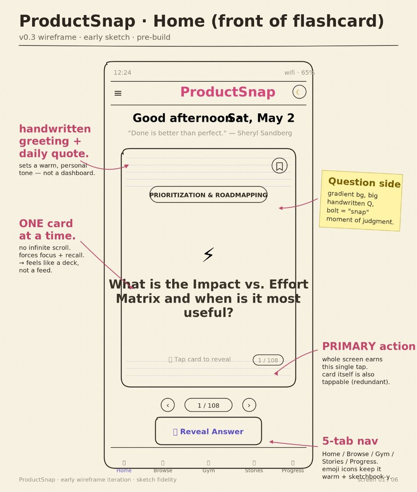
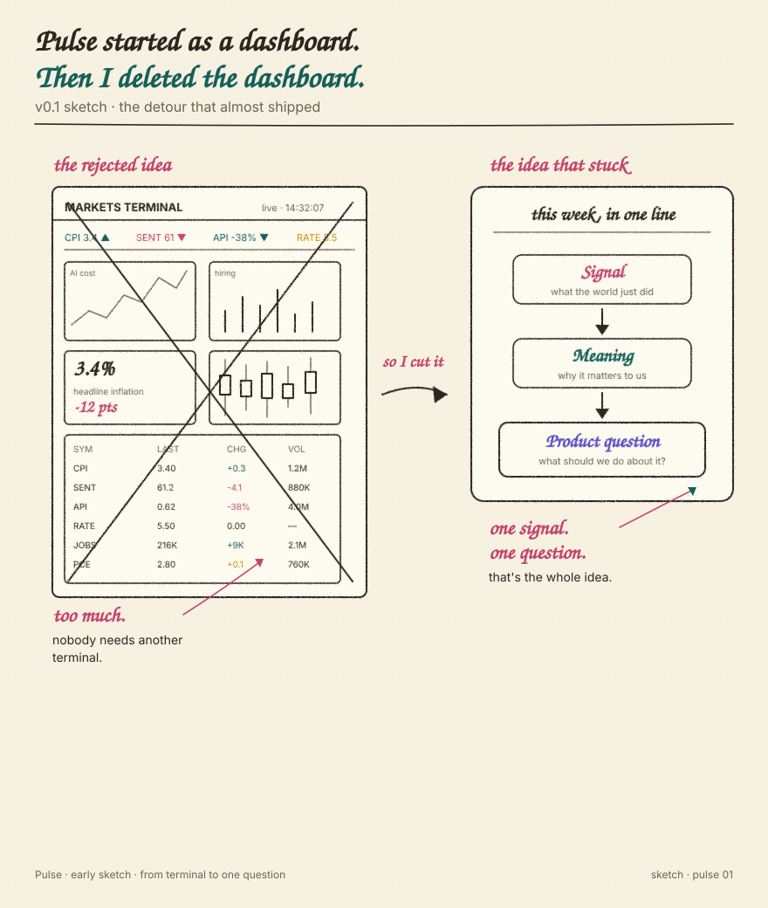
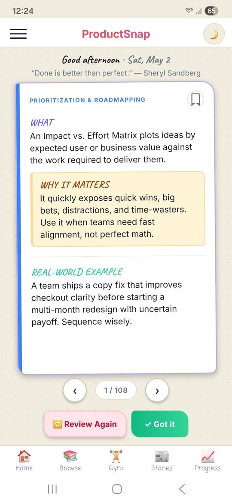

A living notebook for product judgment.
Where product thinking meets live market signals — and turns into things you can actually use. A working notebook from one product person exploring what AI makes possible.
AI finally gave me the ability to build the things I used to only spec. Some days it feels like magic. Most days it feels like learning.
↳ Built by Jeevan — a working notebook, not a polished article. The smudges are intentional.
Everything here started as a pencil sketch.
I think on paper first — messy boxes, margin notes, arrows that argue with each other. Before there were screens, there were rough sketches trying to answer the same question: does this actually make sense? Here's a peek at two of them. One became the ProductSnap app. The other became Pulse, after a brief detour where it looked suspiciously like a Bloomberg terminal. The full sketchbooks live on their own pages.


ProductSnap — live on both stores.
A mobile app for product thinkers — flashcards, real product stories, practice reps, and forward-looking PM trends. Now live on the App Store and Google Play. Free, built solo in about twelve weeks, with AI as the whole team. No engineers were hired. Plenty of AI arguments were had.
AI helped with
- speed
- iteration
- code
- options
I still brought
- taste
- judgment
- product calls
- QA
- knowing when something felt wrong

- Idea in a notebook
- AI conversations
- First prototype
- Many rebuilds & fixes
- iOS + Android launch
Pulse — where signals become product questions.
AI costs. Hiring trends. Inflation. Consumer behavior. Most people see them separately. Pulse connects them and asks the question that matters most: what should a product team pay attention to next?
Notes from the edge of the map.
Some ideas arrive fully formed. Most don't. This is where I work through them anyway. AI, product strategy, markets, technology, and the occasional idea that refuses to leave me alone. Some notes will be observations. Some will be experiments. A few will be wrong. That's part of the deal. Notes is where the unfinished thinking lives.
I'm Jeevan. I work in product, and I got curious about what one person could build with AI. So I spent a few months finding out. ProductSnap, Pulse, and this notebook are the result. This site is the receipt.
Supervised most late-night builds. Mostly by sleeping through them.